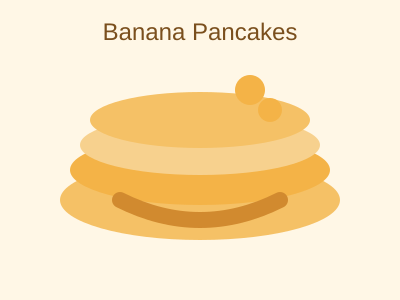

Fluffy Banana Pancakes
A tasty breakfast recipe with ripe bananas, soft pancakes, and a hint of vanilla.
Recipe Details
Prep Time: 10 minutes
Cook Time: 15 minutes
Servings: 4 pancakes
Difficulty: Easy
Recipe Image

Ingredients
- 2 ripe bananas, mashed
- 1 cup all-purpose flour
- 1 cup milk
- 1 large egg
- 1 tablespoon sugar
- 1 teaspoon baking powder
- 1/2 teaspoon vanilla extract
- Pinch of salt
Instructions
- In a bowl, mash the bananas until smooth with small lumps remaining.
- Stir in the egg, milk, and vanilla extract until well combined.
- Mix the flour, sugar, baking powder, and salt in a separate bowl.
- Pour the dry ingredients into the wet ingredients and stir gently.
- Heat a pan over medium heat and add a little oil or butter.
- Pour batter onto the pan and cook until bubbles form, then flip the pancake.
- Cook the other side until golden brown and transfer to a plate.
Notes
For extra flavor, add a pinch of cinnamon or top with fresh berries and maple syrup.
Tip: Use very ripe bananas for the sweetest, fluffiest pancakes.
Nutrition Facts
Approximate values per serving: 250 calories, 8g protein, 35g carbohydrates, 8g fat.